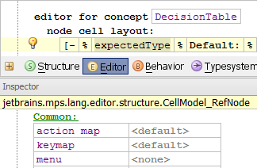

The Inspector window opens after you press Alt/Cmd + 2. Some code and properties (e.g. editor styles, macros etc.) are shown and edited inside the Inspector window so it is advisable to keep the window ready.
